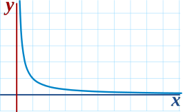
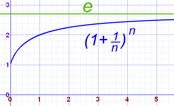

Limits to Infinity
Please read Limits (An Introduction) first
Infinity is a very special idea. We know we can't reach it, but we can still try to work out the value of functions that have infinity in them.
One Divided By Infinity
Let's start with an interesting example.
| Question: What is the value of 1 ∞ ? |
| Answer: We don't know! |
Why don't we know?
The simplest reason is that Infinity is not a number, it is an idea.
So 1 ∞ is a bit like saying 1 beauty or 1 tall .
Maybe we could say that 1 ∞ = 0, ... but that is a problem too, because if we divide 1 into infinite pieces and they end up 0 each, what happened to the 1?
In fact 1 ∞ is known to be undefined.
But We Can Approach It!
So instead of trying to work it out for infinity (because we can't get a sensible answer), let's try larger and larger values of x:

| x | 1 x |
| 1 | 1.00000 |
| 2 | 0.50000 |
| 4 | 0.25000 |
| 10 | 0.10000 |
| 100 | 0.01000 |
| 1,000 | 0.00100 |
| 10,000 | 0.00010 |
Now we can see that as x gets larger, 1 x tends towards 0
We are now faced with an interesting situation:
- We can't say what happens when x gets to infinity
- But we can see that 1 x is going towards 0
We want to give the answer "0" but can't, so instead mathematicians say exactly what is going on by using the special word "limit"
The limit of 1 x as x approaches Infinity is 0
And write it like this:
In other words:
As x approaches infinity, then 1 x approaches 0
When you see "limit", think "approaching"
It is a mathematical way of saying "we are not talking about when x=∞, but we know as x gets bigger, the answer gets closer and closer to 0".
Summary
So, sometimes Infinity cannot be used directly, but we can use a limit.
| What happens at ∞ is undefined ... | 1 ∞ |  |
||
| ... but we do know that 1/x approaches 0 as x approaches infinity |
limx→∞ (1x) = 0
|
 |
Limits Approaching Infinity
What is the limit of this function as x approaches infinity?
y = 2x
Obviously as "x" gets larger, so does "2x":
| x | y=2x |
| 1 | 2 |
| 2 | 4 |
| 4 | 8 |
| 10 | 20 |
| 100 | 200 |
| ... | ... |
So as "x" approaches infinity, then "2x" also approaches infinity. We write this:
But don't be fooled by the "=". We cannot actually get to infinity, but in "limit" language the limit is infinity (which is really saying the function is limitless).
Infinity and Degree
We have seen two examples, one went to 0, the other went to infinity.
In fact many infinite limits are actually quite easy to work out, when we figure out "which way it is going", like this:
Functions like 1/x approach 0 as x approaches infinity. This is also true for 1/x2 etc
A function such as x will approach infinity, as well as 2x, or x/9 and so on. Likewise functions with x2 or x3 etc will also approach infinity.
But be careful, a function like "−x" will approach "−infinity", so we have to look at the signs of x.
Example: 2x2−5x
- 2x2 will head towards +infinity
- −5x will head towards -infinity
- But x2 grows more rapidly than x, so 2x2−5x will head towards +infinity
In fact, when we look at the Degree of the function (the highest exponent in the function) we can tell what is going to happen:
When the Degree of the function is:
- greater than 0, the limit is infinity (or −infinity)
- less than 0, the limit is 0
But if the Degree is 0 or unknown then we need to work a bit harder to find a limit.
Rational Functions
| A Rational Function is one that is the ratio of two polynomials: |
f(x) = P(x)Q(x)
|
|
| For example, here P(x) = x3 + 2x − 1, and Q(x) = 6x2: |
x3 + 2x − 16x2
|
Following on from our idea of the Degree of the Equation, the first step to find the limit is to ...
Compare the Degree of P(x) to the Degree of Q(x):
... the limit is 0.
... divide the coefficients of the terms with the largest exponent, like this:
(note that the largest exponents are equal, as the degree is equal)
... then the limit is positive infinity ...
... or maybe negative infinity. We need to look at the signs!
We can work out the sign (positive or negative) by looking at the signs of the terms with the largest exponent, just like how we found the coefficients above:
|
x3 + 2x − 16x2
|
For example this will go to positive infinity, because both ...
|
|
|
−2x2 + x5x − 3
|
But this will head for negative infinity, because −2/5 is negative. |
A Harder Example: Working Out "e"
This formula gets closer to the value of e (Euler's number) as n increases:
At infinity:
We don't know!
So instead of trying to work it out for infinity (because we can't get a sensible answer), let's try larger and larger values of n:

| n | (1 + 1/n)n |
|---|---|
| 1 | 2.00000 |
| 2 | 2.25000 |
| 5 | 2.48832 |
| 10 | 2.59374 |
| 100 | 2.70481 |
| 1,000 | 2.71692 |
| 10,000 | 2.71815 |
| 100,000 | 2.71827 |
Yes, it is heading towards the value 2.71828... which is e (Euler's Number)
So again we have an odd situation:
- We don't know what the value is when n=infinity
- But we can see that it settles towards 2.71828...
So we use limits to write the answer like this:
It is a mathematical way of saying "we are not talking about when n=∞, but we know as n gets bigger, the answer gets closer and closer to the value of e".
Don't Do It The Wrong Way ... !
If we try to use infinity as a "very large real number" (it isn't!) we get:
(Wrong!)
So don't try using Infinity as a real number: you can get wrong answers!
Limits are the right way to go.
Evaluating Limits
I have taken a gentle approach to limits so far, and shown tables and graphs to illustrate the points.
But to "evaluate" (in other words calculate) the value of a limit can take a bit more effort. Find out more at Evaluating Limits.